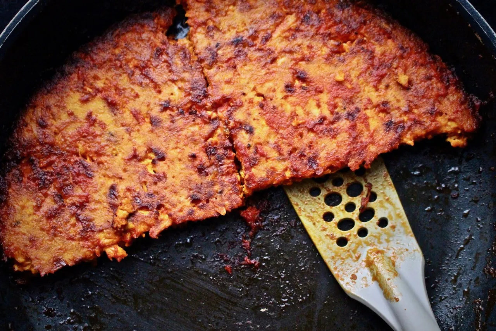

Chicken Kuku

Chicken Kuku is a family favorite dish coming from a region in the north of Iran. It it very similar to the italian frittata with a few more spices and less eggs.
Ingredients
- 2 lbs Chicken Breast
- 1/4 tsp Saffron dissolved
- 4 Eggs
- 1 large Onion
- 8 Tbsp Clarified Butter
- 1 Tbsp Lime Juice
- 1/2 tsp baking powder
- Armotaic herbs: rosemary,sage etc.
- Salt & Pepper to taste
Steps
- Place the chicken in a saucepan with one of the onions, cover, and simmer for 45 minutes over low heat. It is not necessary to add water; the chicken and onion will produce enough juice. Remove chicken, debone it, finely chop and set aside to cool.
- In a skillet, brown the other onion in 3 tablespoons of the oil.
- Preheat oven to 350°F.
- Break eggs into a bowl. Add the browned onion, saffron water, baking powder, lime juice, salt, and pepper. Beat the mixture thoroughly with a fork.
- Add the chicken pieces to the beaten eggs. Mix, taste and adjust seasoning.
- Pour ¼ cup of the oil or butter into an 8-inch ovenproof baking dish and place it in the oven. Heat the oil or butter for 10 to 15 minutes; pour in the egg mixture and bake uncovered for 30 minutes. Remove the dish and gently pour the remaining oil or butter over the kuku. Put back in the oven and bake for 20 to 30 minutes longer, until golden brown.
- Serve kuku in the baking dish, or unmold it by loosening the edge with knife and inverting onto a serving platter.
- Serve hot or cold with fresh herbs, yogurt, and bread. Nush-e Jan!
Note:Kuku
can also be cooked on top of the stove. Heat the oil or butter in a skillet, pour in the egg mixture, then cook, covered, over low heat until it has set, about 15 minutes. Turn the kuku over by cutting it into wedges and turning them over one by one. Add more oil if needed, cover, and cook for 15 to 20 minutes longer, or until golden brown.